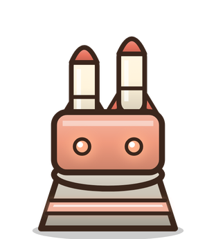

터렛 대기 효과 — 가능한지 검토
2026-11-16 · 질문: "터렛에 효과를 애니처럼 돌려 작동하고 있는 느낌을 줄 수 있을까? 벼락탑은 스파크가 치치직, 레이저 포는 레이저가 원형으로 약하게 터렛 주변을 도는 형태"
결론: 가능합니다. 지금 구조로 무리 없이 됩니다.
- 방법: 터렛 그림에서 움직일 부분(벼락 구슬 · 레이저 수정 · 프로펠러 · 바퀴 · 벌 · 미사일)만 따로 그려서, 게임 코드가 매 프레임 돌리기 · 위아래 흔들기 · 깜빡이기 · 그림 바꾸기를 합니다. 오늘 넣은 "터렛 아래 빛 고리 숨쉬기"와 "대장 카피 총 돌리기"가 같은 방식이라 이미 바탕이 있습니다.
- Unity 애니메이터(Animator)는 안 써도 됩니다 — 카치건처럼 코드로 움직이면 표 값 하나로 속도·세기를 바꿀 수 있고, 그림은 지금처럼 도구가 다시 뽑습니다.
- 무게(성능): 터렛 4칸 x 움직이는 조각 2~4개 + 가끔 불꽃 몇 개 → 화면에 수십 개 더해지는 정도라 폰에서도 부담 없습니다. 빛 효과는 오늘 만든 "빛 더하기" 재질 하나를 같이 써서 한 번에 그려집니다.
- "작동하는 느낌"을 더 살리는 방법: 쉬는 동안은 약하게, 쏠 때가 가까워질수록 점점 세게(충전), 쏘는 순간 번쩍 → 다시 약하게. 터렛 단계가 오르면 조금 더 빠르고 밝게.
- 주의: 화면이 정신없어지지 않게(예전 말씀 "정신없는 것 싫음") 쉬는 동안 효과는 옅게(30~50%) 두고, Config 값(
Idle_Fx세기 · 0 = 끄기)으로 한 번에 줄이거나 끌 수 있게 하겠습니다.
① 터렛별 안 (말씀하신 2개 + 나머지 4개 같은 방식)
| 터렛 | 움직임 (쉬는 동안 약하게 → 쏘기 직전 세게) | 그림 작업 |
|---|---|---|
 벼락탑 | 구슬 위아래로 작은 번개가 치직치직 튐(0.05~0.1초마다 모양·방향을 바꿔 깜빡) · 구슬 빛이 불규칙하게 떨림 · 가끔 작은 불꽃 2~3개 | 구슬 · 코일을 따로 그림 + 짧은 번개 그림 3장 |
 레이저 포 | 수정 둘레를 얇은 빛 고리가 천천히 돎(눕힌 타원 + 고리를 따라 도는 밝은 점 — 앞쪽에선 수정 앞, 뒤쪽에선 뒤로) · 수정이 살짝 떠서 위아래로 흔들림 · 수정 빛 숨쉬기 | 수정을 따로 그림 + 고리 앞/뒤 반쪽 2장 |
 관통포 | 가운데 둥근 바퀴가 천천히 돎 · 포신 끝 빛이 쏠 때가 가까워질수록 밝아짐(충전) | 바퀴를 따로 그림 |
 끈끈이 드론 | 프로펠러가 돎(타원 폭을 빠르게 바꿔 도는 것처럼) · 몸이 둥실둥실 · 눈이 목표 쪽을 봄 · 가끔 깜빡 | 프로펠러 2 · 몸 · 눈동자를 따로 |
 벌집 | 작은 벌 2~3마리가 벌집 둘레를 빙빙 돎(속도·높이 다르게) · 입구가 따뜻하게 숨쉬기 | 벌집 그림에서 벌 3마리를 빼고 따로 |
 유도 미사일 | 쏘면 위 미사일 2개가 사라졌다가 아래에서 올라와 다시 장전 · 미사일 꼬리에 작은 김/불티 · 등 깜빡 | 미사일 2개를 따로 그림 |
② 진행 순서 추천
- 1단계 시안: 말씀하신 벼락탑 · 레이저 포 2개만 먼저 만들어, 실제 게임 크기로 찍은 움직이는 GIF를 비교 문서로 보여 드림 (지금 ↔ 시안).
- 2단계: 시안이 괜찮으면 나머지 4개(관통포 · 드론 · 벌집 · 미사일)를 같은 방식으로 → 자동 시험에 "터렛마다 움직이는 조각이 있음 · 쏘기 직전 밝아짐" 검사 줄 추가 → 캡처 · GIF 확인 뒤 보고.
- 예상 작업량: 1단계는 짧게(그림 조각 + 코드 한 덩어리), 2단계는 터렛마다 그림을 나누는 일이 대부분입니다.